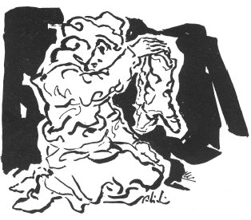

HÜSEYİNİN AĞIDI
Sarızın Avşarlarından Hüseyin adındaki delikanlı bir kız seviyormuş. Kızın kardeşleri Hüseyini pusuya düşürüp yakalamış öldürmüşler. Ağıdı Hüseyinin anası yakmış. Yıl 1910.
Bir kayaya eğlemişler
Elin kolun bağlamışlar
Babam oğlu Hüseyini
Sığın avı eylemişler
Yüce dağların kıcısı
Zor olur kardeş acısı
Öldüren de adam olsa
Gecelerin kör böcüsü
Nesini diyem nesini
Kim bulmuş kanlı fesini
Gökte melekler işitmiş
Hüseyinimin sesini
Toygun babam oğlu toygun
Boyu da kendine uygun
Mavi cepken sırma salta
Düşmanlara vermiş soygun
Kanlı kime güveniyor
Kardeş donun ağarıyor
Dışarı çık kele Fadik
Adı tatlım çağırıyor
Hüseyinin çatık kaşı
Tabuta sığmıyor döşü
Bugün ulu bayram günü
Mehmet Ali sık yoldaşı
Sığın Geyik.
Kıcı Karla karışık yağan küçük buz tanelerine kıcı denir. Bir türküden: "Engine kar yağar, yükseğe kıcı," Başka bir türkü: "Kıcılı boranlı bizim dağımız."
Don Giyit, elbise, giysi.
Toygun Kabadayı, görkemli.
Döş Göğüs.
